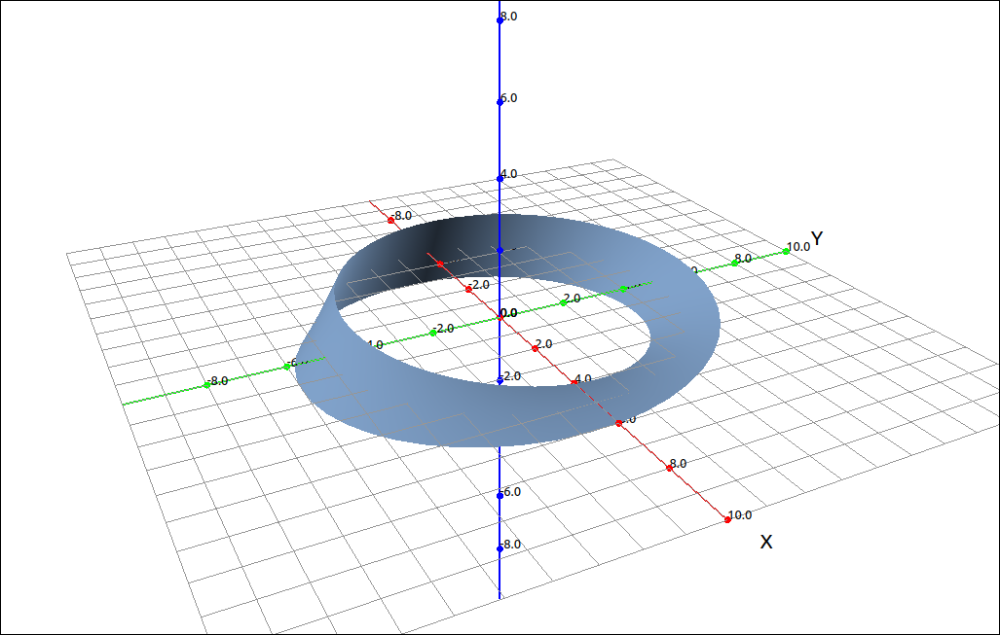
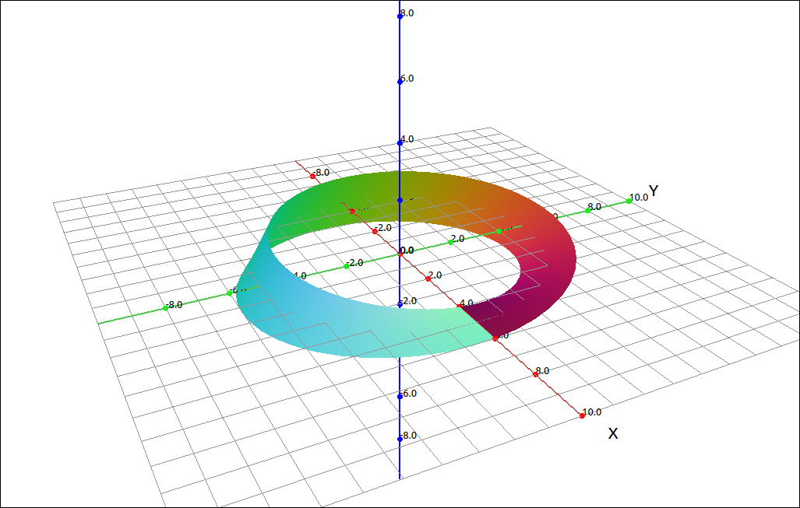
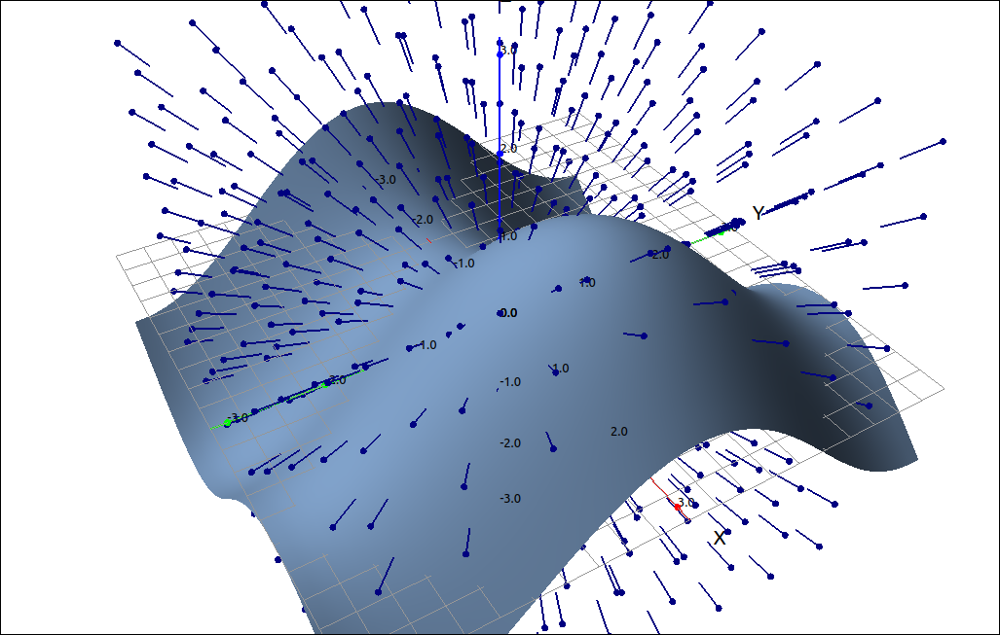

Surface Integrals#
The relationship between surface integrals and surface area is much the same as the relationship between line integrals and arc length. Recall that the arc length of a space curve \(\mathbf{r}(t)\) is
The line integral of a function over this curve is,
So if our function \(f(x, y, z) = 1\) the line integral turns out to be exactly the arc length.
Surface Integrals#
Definition: Surface Integral
If we have a surface S defined parametrically,
for \((u, v) \in D.\) For a function of three variables \(f(x, y, z)\), the surface integral of f over the surface S is
Note that if \(f(x, y, z) = 1\) then the surface integral reduces to the surface area of the surface.
Example: Surface Integral#
In this example we will calculate the surface integral,
where the surface S is the unit sphere, \(x^2+y^2+z^2=1.\)
CLAE#
The first step is to parameterize the unit sphere. These are the familiar spherical coordinates.
for \(0 \leq \varphi \leq \pi\) and \(0 \leq \theta \leq 2\pi.\) Input the parameterization,
[sin(p)*cos(t),sin(p)*sin(t),cos(p)]
Now we will calculate \(|\mathbf{r}_\varphi \times \mathbf{r}_\theta|.\) Select the parametric equations then Calculus > Derivative, use the variable, p, then do the same using the variable t. The results are,
and
Now take their cross product,
Then take the length of this,
simplify this expression,
Since this is real we can further do Algebra > Simplify Assuming Real Variables the result is,
Now we will input the function substituting the parametric equations for x and y
sin(p)^2*sin(t)^2 + sin(p)^2*cos(t)^2
Multiply this by the result of the cross product,
Now select Calculus > Multiple Integrals > Double Integral, use the first variable as p with bounds 0 and pi, the second variable as t with bounds 0 and 2*pi, the result is,
Definition: Surface Integral for \(z = g(x, y)\)
Given a function \(z = g(x, y)\) we can parameterize the surface as,
for \((x, y) \in D.\) For a function of three variables \(f(x, y, z)\), the surface integral of f over the surface S is
Example: Surface Integral for \(z = g(x, y)\)#
In this example we will calculate the surface integral,
where the surface S is, \(z = x^2+y^2\) on \([0, 1] \times [0, 1].\)
CLAE#
The derivatives and substitutions are easy to do by hand but we will let the CAS do the integrals. The integrand will be,
(x+y+x^2+y^2)*((2*x)^2 + (2*y)^2+1)
Select this integrand, then select Calculus > Multiple Integrals > Double Integral, first variable is x with bounds 0 and 1 and the second variable is x with bounds 0 and 1. The result is, \(\frac{337}{45}.\)
Oriented Surfaces#
Not all surfaces are created equally. For many of the results we will be looking at later need to be “nice” in a particular way, specifically they need to be oriented. Many textbooks start this discussion by giving an example of a classic non-oriented surface, the Möbius strip. The parametric equations for the Möbius strip are
where R is the radius of the strip and v is the width parameter of the strip. A graph of this is below.

Mobius Strip#
If you started walking on one side of the strip after one time around you will be on the “other” side of the strip and in another time around you would end up back where you started having walked “both” sides. This is a non-oriented surface for the following reason. Say that you and your friend start at the same place on the surface, you do not move and your friend walks around one turn of the strip. At this point you are on top pointing up and they on the bottom pointing down.
Now lets think about this more mathematically. Thinking with the person walking example, the direction you are standing would be a normal vector to the surface. When you get around once the normal vector is pointing in the opposite direction. to make these point in the same direction we need to do an abrupt flip (a discontinuous operation) of the normal vector. With a non-oriented surface like this there is no distinction between the sides of the surface.
Example: Mobius Strip#
CLAE#
We will graph a Mobius strip in two ways, one that shows the normal vector discontinuity. We will graph one that had a radius of 5, you can use another radius, even keep it R to animate it, but 5 is good to illustrate. Input the parametric equations,
[(v*cos(u/2) + 5)*cos(u),(v*cos(u/2) + 5)*sin(u),v*sin(u/2)]
CLick and drag this over to the 3D graphics window. The image you see will not look like the one below, go into the properties and change the V range to -1 to 1 and the U bounds to 0 and 2*pi. The result should look close the following.
Mobius Strip#
This surface looks nice and smooth but to see the normal vector discontinuity go into the properties again and change the Surface Shading to Shade by Camera and Normals. This shading mode takes into account the normal vector to the surface when determining the color.

Mobius Strip Showing Inconsistency#
Where the surface comes together on the positive x-axis you can see a distinct change in color, that is the normal vector discontinuity.
Now on to what an oriented surface is.
Definition: Oriented Surface
Given a surface S, if it is possible to choose a unit normal vector \(\mathbf{N}\) at every such point \((x, y, z)\) so that \(\mathbf{N}\) varies continuously over S, then S is an oriented surface and the given choice of \(\mathbf{N}\) provides S with an orientation. For any orientable surface, there are two possible orientations.
In general we can calculate a normal for a parametric surface or a surface defined by a function. If we have a surface defined parametrically, \(\mathbf{r}(u, v)\) then we can define,
If our surface is defined as a function of two variables, \(g(x, y)\) then we can write the above formula as,
Definition: Closed Surfaces
A closed surface, one that is the boundary of a solid region E, the convention is that the positive orientation is the one for which the normal vectors point outward from E, and inward-pointing normals give the negative orientation.
Flux: Surface Integrals of Vector Fields#
You can think about surface integrals of vector fields (flux) as a measure of how much of the field is flowing through the surface. For example, consider the surface and vector field pictured below.

Flux#
If we think about the surface being submerged in water and the vector field representing the velocity of the flow of the water then the flux is the amount of water flowing through the surface. We also consider the surface to be an imaginary surface that is not restricting the flow of the field.
Definition: Surface Integral of a Vector Field
If \(\mathbf{F}\) is a continuous vector field defined on an oriented surface S with unit normal vector \(\mathbf{N}\), then the surface integral of \(\mathbf{F}\) over S (or the flux of \(\mathbf{F}\) across S) is
Example: Surface Integral of a Vector Field#
In this example we will calculate the surface integral,
where the surface S is the unit sphere, \(x^2+y^2+z^2=1\) and \(\mathbf{F}\) is the vector field,
CLAE#
The first step is to parameterize the unit sphere. These are the familiar spherical coordinates.
for \(0 \leq \varphi \leq \pi\) and \(0 \leq \theta \leq 2\pi.\) Input the parameterization,
[sin(p)*cos(t),sin(p)*sin(t),cos(p)]
Now we will calculate \(\mathbf{r}_\varphi \times \mathbf{r}_\theta.\) Select the parametric equations then Calculus > Derivative, use the variable, p, then do the same using the variable t. The results are,
and
Now take their cross product,
Now input the vector field,
[z^2, y^3, x^4]
Select this field, then select Algebra > Evaluate, the variables default to [x, y, z], for the expressions input the CAS designation for the sphere parametric equations, the result will be,
Now use Vector > Dot Product to take the dot product of the last result and the cross of the partial derivatives, the result will be,
You may have encountered the bars before, these are complex conjugates since CLAE (SymPy) treats all variables as complex. Select Algebra > Simplify Assuming Real Variables and the result is,
Finally we integrate, select Calculus > Multiple Integrals > Double Integral, first variable is p with bounds 0 and pi and the second variable is t with bounds 0 and 2*pi. The result is, \(\frac{4 \pi}{5}.\)
Definition: Functional Surface Integral of a Vector Field
If \(\mathbf{F} = (P, Q, R)\) is a continuous vector field defined on an oriented surface S given by \(z = g(x, y)\), then the surface integral can be calculated by
Example: Functional Surface Integral of a Vector Field#
In this example we will calculate the surface integral,
where the surface S is, \(z = x^2+y^2\) on \([-1, 1] \times [-1, 1]\) and \(\mathbf{F}\) is the vector field,
This is easy enough to do by hand but we will let the CAS handle the integration.
CLAE#
Input the integrand,
-2*x*(x^2+y^2)^2-2*y^4+x^4
Select Calculus > Multiple Integrals > Double Integral, first variable is x bounds -1 and 1 and the second variable is y also with bounds -1 and 1. The result is \(- \frac{4}{5}.\)